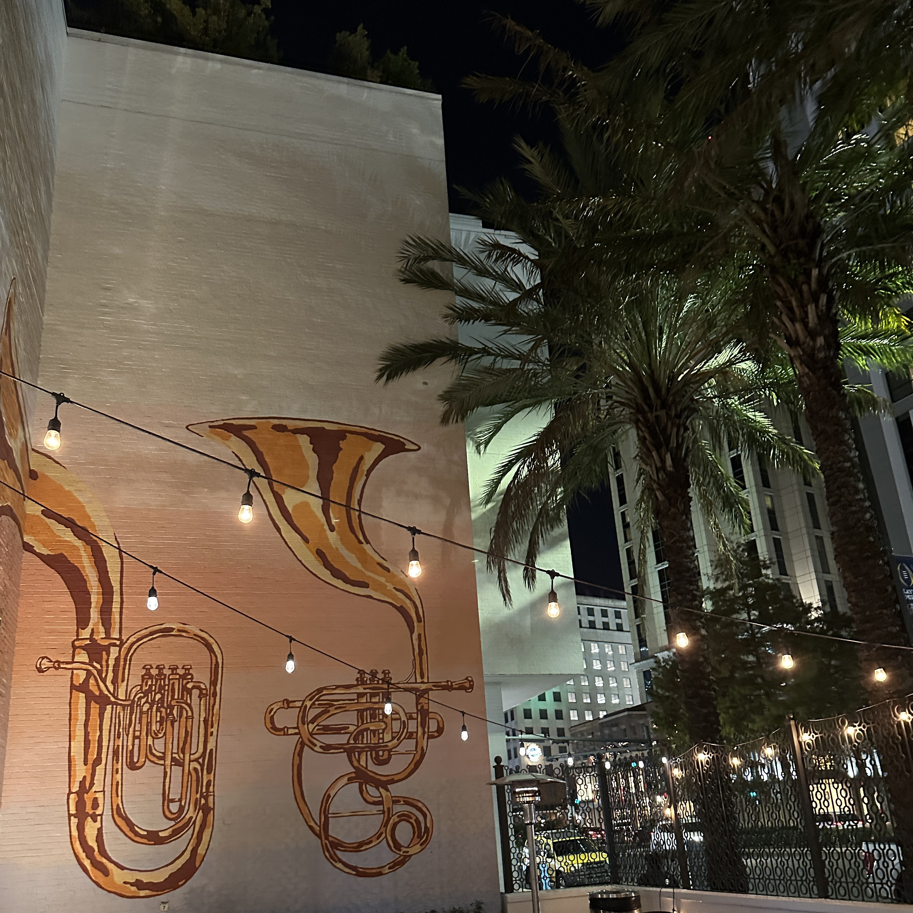

My first journey to NeurIPS 2023 was an exhilarating whirlwind, packed with a wealth of knowledge and insights. As I reflect on this incredible experience, the sheer magnitude of the event still astounds me: a staggering 3,500+ papers were accepted, and the conference welcomed over 15,000 attendees. This blog post is my attempt to distill the essence of this unforgettable event and share some of the most striking highlights.
A Tweet That Resonated
In the whirl of discussions and discoveries at NeurIPS 2023, a particular tweet by @Thom_Wolf, and shared by Christopher Manning, stood out for its poignant encapsulation of a key trend at the conference. It speaks volumes about the shifting landscape in the world of AI research:
.@Thom_Wolf: “Academia is back as we saw at NeurIPS 2023. With many private and open-source labs closing the doors on publishing their results and data, academia rises again in visibility and is shining with many impactful papers in 2023 and exciting new work coming.” https://t.co/tlOiuLOJhC
— Christopher Manning (@chrmanning) December 18, 2023
Insights and Interactions
Math Meets AI
- Math Field Medalists and LLMs: One of the most fascinating aspects of NeurIPS 2023 was the intersection of mathematics and large language models (LLMs),
A Look at the Conference’s Heart
- A Glimpse into the Latent Space:The conference offered a deep dive into its rich content through an array of papers and posters. For those who couldn’t attend or wish to revisit the highlights, here are some curated links that offer a window into the latent space of AI innovations::
Meeting the Teams Behind the Tech
- Gemini and Mistral Teams: Getting to meet the people who work on Gemini and Mistral was a highlight for me. Talking with them about how they build their tech was really insightful.
Stars of the AI World
- Celebrity Encounters: The conference had a lot of famous people from the AI field. It was exciting to see them in person.
Business Interest in AI
- VC Presence: I noticed more business people, like venture capitalists, at the conference this year. This shows that more businesses are getting interested in AI and its possibilities.
Key Insights from Christopher Ré’s NeurIPS23 Keynote
Christopher Ré gave a standout keynote at NeurIPS23, focusing on the building blocks for foundation models. You can check out his presentation here (pptx) and watch the video here.
Integrating Classic Database Techniques
- FlashAttention: He talked about how ideas from old-school databases are now being used in Machine Learning systems. For instance, FlashAttention is like a method from classical databases but speeds up ML processing by 6-10 times without losing accuracy, and it also uses 10-20 times less memory.
Approaches to Handling Long Sequences
- Improving Hardware for Transformers: Technologies like FlashAttention, MQA, and Blockwise Attention are making transformers better and faster.
- Approximate Attention: This is about making ML models pay ‘just enough’ attention without overdoing it. Some examples are Reformer, Performer, and Linformer.
- Using Alternatives to Traditional Models: He mentioned using different kinds of models, like RNNs, and applying signal processing techniques – a common method in machine learning – to improve them. Models like S4, Hyena, and CKConv are part of this approach.
Attention as Signal Processing
Christopher Ré discussed a fresh way of looking at ML: treating attention in transformers like handling signals. This involves taking in information, processing it, and outputting it in a way that’s useful. A key part of this is making sure the system stays stable and reliable.
Takeaways
My main takeaway from his talk is that foundation models are just starting out. There’s a lot of challenges ahead, but there’s also a lot of potential for making ML systems more powerful and efficient. This includes better inference, handling more data at once, working with new types of data, and building better architectures for ML systems.
For those interested in the technical details, you can explore their work on GitHub for SysAI building blocks.
Emerging Trends to Watch
Leading Developments
- State-Space Models: These are gaining traction and could shape future directions.
- Grounded Agents: Agents like those from MultiOn and Minion, demonstrating practical applications beyond theoretical concepts.
Concluding Thoughts on NeurIPS 2023
To wrap up, NeurIPS 2023 went beyond a typical conference. It was a vibrant showcase of evolving technologies, offering insights that are not only academically significant but also practically influential in shaping our interaction with technology.